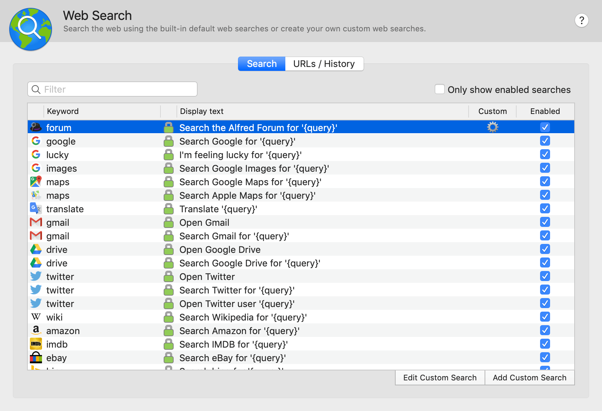
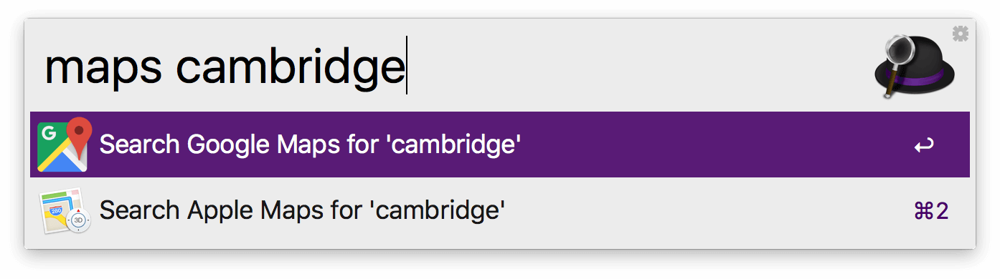
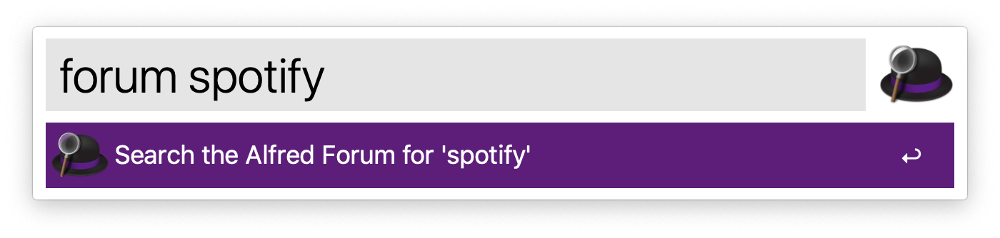
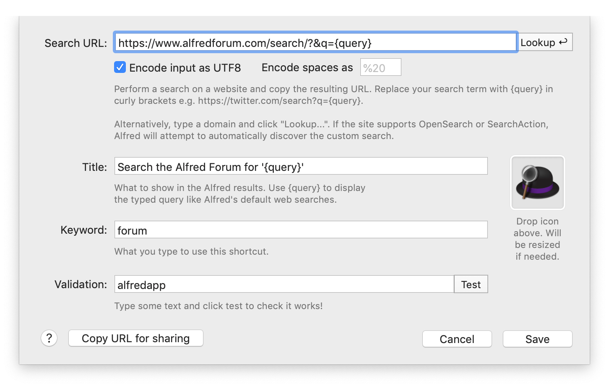
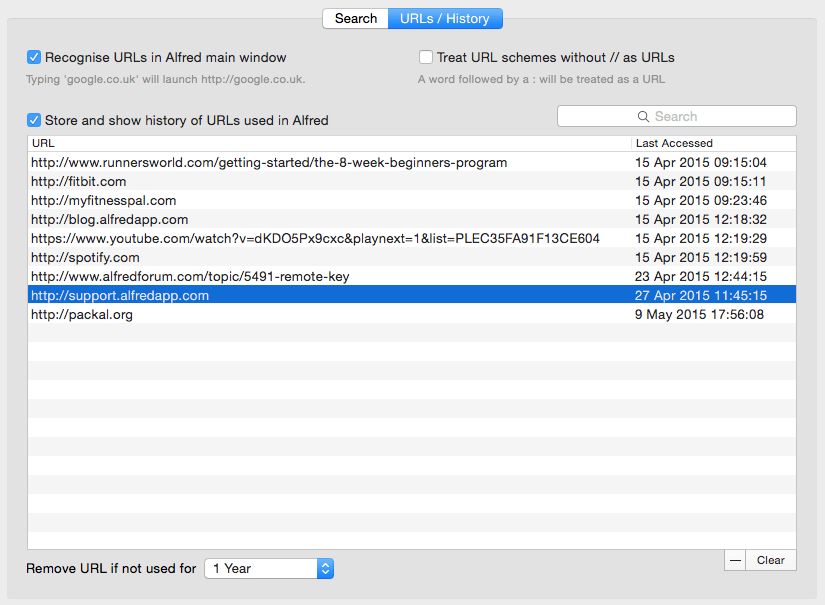

Web Search
The Web Search feature makes it easy to quickly launch web searches from Alfred. We provide a wide range of default web searches for popular sites from Google and Twitter to Amazon and Wikipedia.
Want to add a niche site you love? You can add your own custom searches. You can also ask Alfred to remember past URLs you've typed with URLs and History.
On this Feature page, you'll find out more about:
Default Web Searches
Alfred is great for launching applications on your desktop. But he's also great for helping you search the web much more efficiently than if you were to manually click on a browser icon in your Dock and only then start typing in your search terms.

To take advantage of this feature, simply start your search with the specified keyword. For example, if you want to search Google Maps, start with "maps" followed by your desired search term.

The default web searches are all https (indicated by the green padlock icon) and include the following sites and services: Google Search, Google's I'm Feeling Lucky, Google Images, Google Maps, Apple Maps, Google Translate, Gmail (Open and search), Google Drive (Open and search), Twitter (Open and search for users or tweets), Wikipedia, Amazon, IMDB, eBay, Bing, Yahoo, Ask, LinkedIn, YouTube, Facebook, Flickr, Wolfram, Yubnub, DuckDuckGo, Weather Underground, Rotten Tomatoes, Pinterest, and finally Alfred Help Site search!
Modifying default web searches
The keywords for your searches are fully customisable. Launch Alfred's preferences to Features > Web Search, double-click on the keyword you wish to change and type in your new preferred keyword.
Default web searches can't be deleted, so to disable a default search you don't want to see, uncheck the "Enabled" box.
Custom Searches
Custom searches allow you to setup search queries for sites you use regularly, but are not included in Alfred's default searches.

Using OpenSearch and SearchAction
If you're lucky, the site you want to add a custom search for may support OpenSearch and SearchAction standards, in which case clicking "Lookup" at the right end of your Search URL bar will discover the custom search format for you.
Adding a Custom Search URL manually
If the site doesn't support the standards above, adding a custom search manually is easy too; Find out the search URL on the site of your choice, then replace the query with {query} in curly brackets. Use the test search to ensure your search works as expected then click "Save" to add your new query.

Custom Search fields
- Search URL: This is where Alfred goes when you use the keyword that you have assigned to this custom search. {query} is what you want to search for in that specific application or website.
- Title: What is displayed in the results when you use your keyword.
- Keyword: The keyboard shortcut that you want to use to call up this custom search.
- Encode query using UTF8: This option helps if you're using non-standard characters. Try ticking it if your query didn't work the first time.
To hide a custom search you no longer need, either uncheck the "Enabled" box, or select the custom search row and press backspace to delete it.
For more details, take a look at our tutorial on creating your own custom searches.
URLs & History
Alfred will recognise URLs when they are typed into the search box, to help you quickly launch websites. Simply type google.co.uk and he'll launch it for you!
Powerpack users can choose to store and show the history of URLs they've previously pasted into Alfred. This can be enabled under Features > Web Search > URLs / History.
The URLs will be removed if they're not used for a given period of time, which can be set to 1 week, 1 month, 3 months or a year. You can also clear single items from the list by selecting them and pressing backspace, or fully clear your history by clicking the "Clear" button in the bottom right corner.

You can search the URLs using the search box in the top right, or sort them by URL or last date accessed by clicking on the column header.
Saving URLs for future use:
Need to save URLs or bits of text for a long time? Take a look at Snippets where you can save text snippets in Alfred for quick access later.